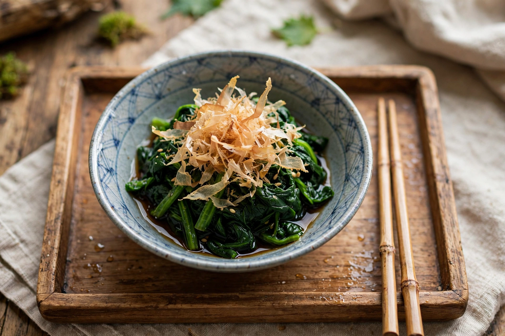

Ohitashi (お浸し) is a Japanese dish of blanched green vegetables steeped in a seasoned dashi-based broth. The name derives from the verb hitasu, "to soak." A staple of home cooking and of the obanzai tradition of Kyoto, ohitashi is a simple side dish that highlights seasonal greens.
Leafy vegetables — most classically spinach (hōrensō no ohitashi) — are briefly blanched, refreshed in cold water, squeezed to remove excess moisture, and cut into lengths. They are then steeped in a cooled marinade of dashi, soy sauce, and mirin, sometimes with sake, allowing the savoury broth to permeate the leaves. Before serving, the dish is commonly topped with katsuobushi (bonito flakes) or toasted sesame seeds. Other vegetables used include komatsuna (Japanese mustard spinach), chrysanthemum greens, asparagus, okra, and green beans. The marinating liquid may be reserved and reused.
A related preparation is goma-ae, in which blanched greens are dressed with a sweet ground-sesame sauce rather than steeped in broth. Ohitashi exemplifies the restrained seasoning of Japanese washoku cooking, relying on dashi umami rather than fat.
See also: Dashi, Japanese cuisine, Aemono.